수질환경기사 (2022-03-05 기출문제)
1과목: 수질오염개론
1. 미생물에 의한 영양대사과정 중 에너지 생성반응으로서 기질이 세포에 의해 이용되고, 복잡한 물질에서 간단한 물질로 분해되는 과정(작용)은?
- 이화
- 동화
- 환원
- 동기화
(정답률: 84%)

2. 다음 산화제(또는 환원제) 중 g당량이 가장 큰 화합물은? (단, Na, K, Cr, Mn, I, S의 원자량은 각각 23, 39, 52, 55, 127, 32이다.)
- Na2S2O3
- K2Cr2O7
- KMnO4
- KIO3
(정답률: 50%)
3. 하천 모델 중 다음의 특징을 가지는 것은?
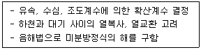
- QUAL - Ⅰ
- WQRRS
- DO SAG - Ⅰ
- HSPE
(정답률: 80%)
4. 다음 중 수자원에 대한 특성으로 옳은 것은?
- 지하수는 지표수에 비하여 자연, 인위적인 국지조건에 따른 영향이 크다.
- 해수는 염분, 온도, pH 등 물리화학적 성상이 불안정하다.
- 하천수는 주변지질의 영향이 적고 유기물을 많이 함유하는 경우가 거의 없다.
- 우수의 주성분은 해수의 주성분과 거의 동일하다.
(정답률: 71%)
5. 수온이 20℃인 하천은 대기로부터의 용존산소 공급량이 0.06mgO2/L·hr라고 한다. 이 하천의 평상시 용존산소농도가 4.8 mg/L로 유지되고 있다면 이 하천의 산소전달계수(/hr)는? (단, α, β값은 각각 0.75이며, 포화용존산소농도는 9.2mg/L 이다.)
- 3.8×10-1
- 3.8×10-2
- 3.8×10-3
- 3.8×10-4
(정답률: 48%)
6. BOD곡선에서 탈산소 계수를 구하는데 적용되는 방법으로 가장 알맞은 것은?
- O Connor – Dobbins 식
- Thomas 도해법
- Rippl 법
- Tracer 법
(정답률: 68%)
7. 수질오염물질별 인체영향(질환)이 틀리게 짝지어진 것은?
- 비소 : 반상치(법랑반점)
- 크롬 : 비중력 연골천공
- 아연 : 기관지 자극 및 폐렴
- 납 : 근육과 관절의 장애
(정답률: 79%)
8. 알칼리도에 관한 반응 중 가장 부적절한 것은?
- CO2 + H2O → H2CO3 → HCO3- + H+
- HCO3- → CO32- + H+
- CO32- + H2O → HCO3- + OH-
- HCO3- + H2O → H2CO3 + OH-
(정답률: 65%)
9. 하천모델의 종류 중 DO SAG - Ⅰ, Ⅱ, Ⅲ에 관한 설명으로 틀린 것은?
- 2차원 정상상태 모델이다.
- 점오염원 및 비점오염원이 하천의 용존산소에 미치는 영향을 나타낼 수 있다.
- Streeter-Phelps 식을 기본으로 한다.
- 저질의 영향이라 광합성 작용에 의한 용존산소반응을 무시한다.
(정답률: 73%)
10. 혐기성 미생물의 성장을 알아보기 위해 혐기성 배양을 하는 방법으로 분석하고자 할 때 가장 적합한 기술은?
- 평판계수법
- 단백질 농도 측정법
- 광학밀도 측정법
- 용존산소 소모율 측정법
(정답률: 58%)
11. 녹조류(Green Algae)에 관한 설명으로 틀린 것은?
- 조류 중 가장 큰 문(division)이다.
- 저장물질은 라미나린(다당류)이다.
- 세포벽은 섬유소이다.
- 클로로필 a, b를 가지고 있다.
(정답률: 67%)
12. 응집제 투여량이 많으면 많을수록 응집효과가 커지게 되는 Schulze-hardy rule의 크기를 옳게 나타낸 것은?
- Al3+ ＞ Ca2+ ＞ K+
- K+ ＞ Ca2+ ＞ Al3+
- K+ ＞ Al3+ ＞ Ca2+
- Ca2+ ＞ K+ ＞ Al3+
(정답률: 68%)
13. 길이가 500km이고 유속이 1m/sec인 하천에서 상류지점의 BODU 농도가 250mg/L이면 이 지점부터 300km 하류지점의 잔존 BOD 농도(mg/L)는? (단, 탈산소계수는 0.1/day, 수온 20℃, 상용대수 기준, 기타조건은 고려하지 않음)
- 약 51
- 약 82
- 약 113
- 약 138
(정답률: 49%)
14. 카드뮴이 인체에 미치는 영향으로 가장 거리가 먼 것은?
- 칼슘 대사기능 장해
- Hunter-Russel 장해
- 골연화증
- Fanconi씨 증후군
(정답률: 70%)
15. 우리나라의 수자원 특성에 대한 설명으로 잘못된 것은?
- 우리나라의 연간 강수량은 약 1274mm로서 이는 세계평균 강수량의 1.2배에 이른다.
- 우리나라의 1인당 강수량은 세계평균량의 1/11 정도이다.
- 우리나라 수자원의 총 이용율은 9% 이내로 OECD 국가에 비해 적은 편이다.
- 수자원 이용현황은 농업용수가 가장 많은 비율을 차지하고 있고 하천유지용소, 생활용수, 공업용수의 순이다.
(정답률: 61%)
16. 완충용액에 대한 설명으로 틀린 것은?
- 완충용액의 작용은 화학평형원리로 쉽게 설명된다.
- 완충용액은 한도 내에서 산을 가했을 때 pH에 약간의 변화만 준다.
- 완충용액은 보통 약산과 그 약산의 짝염기의 염을 함유한 용액이다.
- 완충용액은 보통 강염기와 그 염기의 강산의 염이 함유된 용액이다.
(정답률: 72%)
17. 간격 0.5cm의 평행평판 사이에 점성계수가 0.04poise인 액체가 가득 차 있다. 한쪽평판을 고정하고 다른 쪽의 평판을 2m/sec의 속도로 움직이고 있을 때 고정판에 작용하는 전단응력(g/cm2)은?
- 1.61×10-2
- 4.08×10-2
- 1.61×10-5
- 4.08×10-5
(정답률: 27%)
18. 수은(Hg) 중독과 관련이 없는 것은?
- 난청, 언어장애, 구심성 시야협착, 정신장애를 일으킨다.
- 이따이이따이병을 유발한다.
- 유기수은은 무기수은보다 독성이 강하며 신경계통에 장해를 준다.
- 무기수은은 황화물 침전법, 활성탄 흡착법, 이온교환법 등으로 처리할 수 있다.
(정답률: 81%)
19. 완전혼합 흐름 상태에 관한 설명 중 옳은 것은?
- 분산이 1일 때 이상적 완전혼합 상태이다.
- 분산수가 0일 때 이상적 완전혼합 상태이다.
- Morrill 지수의 값이 1에 가까울수록 이상적 완전혼합 상태이다.
- 지체시간이 이론적 체류시간과 동일할 때 이상적 완전혼합 상태이다.
(정답률: 72%)
20. 하천수의 분석결과가 다음과 같을 때 총경도(mg/L as CaCO3)는? (단, 원자량 : Ca 40, Mg 24, Na 23, Sr 88)
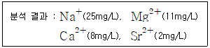
- 약 68
- 약 78
- 약 88
- 약 98
(정답률: 62%)
2과목: 상하수도계획
21. 하천표류수를 수원으로 할 때 하천기준 수량은?
- 평수량
- 갈수량
- 홍수량
- 최대홍수량
(정답률: 78%)
22. 펌프의 크기를 나타내는 구경을 산정하는 식은? (단, D = 펌프의 구경(mm), Q = 펌프의 토출량(m3/min), v = 흡입구 또는 토출구의 유속(m/sec))
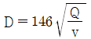
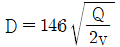
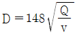
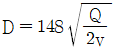
(정답률: 68%)
23. 정수처리시설 중에서 이상적인 침전지에서의 효율을 검증하고자 한다. 실험결과, 입자의 침전속도가 0.15cm/sec 이고 유량이 30000 m3/day로 나타났을 때 침전효율(제거율, %)은? (단, 침전지의 유효표면적 = 100m2, 수심 = 4m, 이상적 흐름상태로 가정)
- 73.2
- 63.2
- 53.2
- 43.2
(정답률: 42%)
24. 상수처리를 위한 정수시설 중 착수정에 관한 내용으로 틀린 것은?
- 수위가 고수위 이상으로 올라가지 않도록 월류관이나 월류위어를 설치한다.
- 착수정의 고수위와 주변벽체의 상단 간에는 60cm 이상의 여유를 두어야 한다.
- 착수정의 용량은 체류시간을 30분 이상으로 한다.
- 필요에 따라 분말활성탄을 주입할 수 있는 장치를 설치하는 것이 바람직하다.
(정답률: 68%)
25. 하수처리수 재이용 처리시설에 대한 계획으로 적합하지 않은 것은?
- 처리시설의 위치는 공공하수처리시설 부지내에 설치하는 것을 원칙으로 한다.
- 재이용수 공급관로는 계획시간최대유량을 기준으로 계획한다.
- 처리시설에서 발생되는 농축수는 공공하수처리시설로 반류하지 않도록 한다.
- 재이용수 저장시설 및 펌프장은 일최대공급유량을 기준으로 한다.
(정답률: 51%)
26. 계획오수량에 관한 설명으로 틀린 것은?
- 계획시간최대오수량은 계획1일 최대오수량의 1시간당 수량의 1.3~1.8배를 표준으로 한다.
- 지하수량은 1인 1일 최대오수량의 20% 이하로 한다.
- 합류식에서 우천 시 계획오수량은 원칙적으로 계획1일 최대오수량의 1.5배 이상으로 한다.
- 계획 1일 평균오수량은 계획1일 최대오수량의 70~80%를 표준으로 한다.
(정답률: 69%)
27. 펌프의 수격작용을 방지하기 위한 방법으로 틀린 것은?
- 펌프의 플라이휠을 제거하는 방법
- 토출관쪽에 조압수조를 설치하는 방법
- 펌프 토출측에 완폐체크밸브를 설치하는 방법
- 관내 유속을 낮추거나 관로상황을 변경하는 방법
(정답률: 72%)
28. 하수도시설인 우수조정지의 여수토구에 관한 설명으로 ( ) 에 옳은 것은?
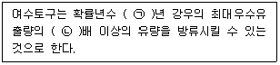
- ㉠ 10, ㉡ 1.2
- ㉠ 10, ㉡ 1.44
- ㉠ 100, ㉡ 1.2
- ㉠ 100, ㉡ 1.44
(정답률: 52%)
29. 하수도시설의 목적과 가장 거리가 먼 것은?
- 침수방지
- 하수의 배제와 이와 따른 생활환경의 개선
- 공공수역의 수질보전과 건전한 물순환의 회복
- 폐수의 적정처리와 이에 따른 산업단지 환경개선
(정답률: 63%)
30. 하수처리에 사용되는 생물학적 처리공정 중 부유미생물을 이용한 공정이 아닌 것은?
- 산화구법
- 접촉산화법
- 질산화내생탈질법
- 막분리활성슬러지법
(정답률: 48%)
31. 하천의 제내지나 제외지 혹은 호소부근에 매설되어 복류수를 취수하기 위하여 사용하는 집수매거에 관한 설명으로 거리가 먼 것은?
- 집수매거의 방향은 통상 복류수의 흐름방향에 직각이 되도록 한다.
- 집수매거의 매설깊이는 5m를 표준으로 한다.
- 집수매거의 유출단에서 매거내의 평균유속은 1m/sec이하로 한다.
- 집수구멍의 직경은 2~8mm로 하며 그 수는 관거표면적 1m2당 200~300개 정도로 한다.
(정답률: 60%)
32. 정수방법인 완속여과방식에 관한 설명으로 틀린 것은?
- 약품처리가 필요 없다.
- 완속여과의 정화는 주로 생물작용에 의한 것이다.
- 비교적 양호한 원수에 알맞은 방식이다.
- 소요 부지면적이 작다.
(정답률: 76%)
33. 펌프의 흡입관 설치요령으로 틀린 것은?
- 흡입관은 펌프 1대당 하나로 한다.
- 흡입관이 길 때에는 중간에 진동방지대를 설치할 수도 있다.
- 흡입관은 연결부나 기타 부분으로부터 절대로 공기가 흡입하지 않도록 한다.
- 흡입관과 취수정 바닥까지의 깊이는 흡인관 직경의 1.5배 이상으로 유격을 둔다.
(정답률: 60%)
34. 막여과법을 정수처리에 적용하는 주된 선정 이유로 가장 거리가 먼 것은?
- 응집제를 사용하지 않거나 또는 적게 사용한다.
- 막의 특성에 따라 원수 중의 현탁물질, 콜로이드, 세균류, 크립토스포리디움 등 일정한 크기 이상의 불순물을 제거할 수 있다.
- 부지면적이 종래보다 적을 뿐 아니라 시설의 건설공사기간도 짧다.
- 막의 교환이나 세척 없이 반영구적으로 자동운전이 가능하여 유지관리 측면에서 에너지를 절약할 수 있다.
(정답률: 71%)
35. 계획우수량의 설계강우 산정 시 측정된 강우자료 분석을 통해 고려해야 하는 지선관로의 최소 설계빈도는?
- 50년
- 30년
- 10년
- 5년
(정답률: 49%)
36. 상수처리를 위한 정수시설인 급속여과지에 관한 설명으로 틀린 것은?
- 여과속도는 120~150 m/day를 표준으로 한다.
- 플록의 질이 일정한 것으로 가정하였을 때 여과층의 필요두께는 여재입경에 반비례한다.
- 여과면적은 계획정수량을 여과속도로 나누어 계산한다.
- 여과지 1지의 여과면적은 150m2 이하로 한다.
(정답률: 73%)
37. 정수시설의 시설능력에 관한 설명으로 ( )에 옳은 것은?
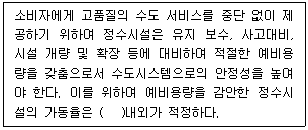
- 70%
- 75%
- 80%
- 85%
(정답률: 62%)
38. 상수도 취수시설 중 취수틀에 관한 설명으로 옳지 않은 것은?
- 구조가 간단하고 시공도 비교적 용이하다.
- 수중에 설치되므로 호소표면수는 취수할 수 없다.
- 단기간에 완성하고 안정된 취사가 가능하다.
- 보통 대형취수에 사용되며 수위변화에 영향이 적다.
(정답률: 69%)
39. 하수관로에서 조도계수 0.014, 동수경사 1/100 이고 관경이 400mm일 때 이 관로의 유량(m3/sec)은? (단, 만관기준, Mannign 공식에 의함)
- 약 0.08
- 약 0.12
- 약 0.15
- 약 0.19
(정답률: 39%)
40. 하수도 관로의 접합방법 중 아래 설명에 해당되는 것은?
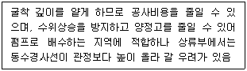
- 수면접합
- 관저접합
- 동수접합
- 관정접합
(정답률: 59%)
3과목: 수질오염방지기술
41. 분뇨 소화슬러지 발생량은 1일 분뇨투입량의 10%이다. 발생된 소화슬러지의 탈수 전 함수율이 96%라고 하면 탈수된 소화슬러지의 1일 발생량(m3)은? (단, 분뇨투입량 = 360kL/day, 탈수된 소화 슬러지의 함수율 = 72%, 분뇨 비중 = 1.0)
- 2.47
- 3.78
- 4.21
- 5.14
(정답률: 45%)
42. 표준활성화슬러지법에서 포기조의 MLSS 농도를 3000 mg/L로 유지하기 위해서 슬러지 반송율(%)은? (단, 반송 슬러지의 SS농도 = 8000 mg/L)
- 40
- 50
- 60
- 70
(정답률: 65%)
43. 폐수량 1000 m3/day, BOD 300 mg/L인 폐수를 완전혼합 활성슬러지공법으로 처리하는데 포기조 MLSS 농도 3000 mg/L, 반송슬러지 농도 8000 mg/L로 유지하고자 한다. 이때 슬러지반송률은? (단, 폐수 및 방류수 MLSS 농도는 0, 미생물 생장률과 사멸률은 같다.)
- 0.6
- 0.7
- 0.8
- 0.9
(정답률: 53%)
44. 수은계 폐수 처리방법으로 틀린 것은?
- 수산화물침전법
- 흡착법
- 이온교환법
- 황화물침전법
(정답률: 56%)
45. 생물학적 질소, 인 처리공정인 5단계 Bardenpho 공법에 관한 설명으로 틀린 것은?
- 폐슬러지내의 인의 농도가 높다.
- 1차 무산소조에서는 탈질화 현상으로 질소 제거가 이루어진다.
- 호기성조에서는 질산화와 인의 방출이 이루어진다.
- 2차 무산소조에서는 잔류 질산성질소가 제거된다.
(정답률: 60%)
46. 활성슬러지를 탈수하기 위하여 98%(중량비)의 수분을 함유하는 슬러지에 응집제를 가했더니 [상등액 : 침전 슬러지]의 용적비가 2:1이 되었다. 이 때 침전 슬러지의 함수율(%)은? (단, 응집제의 양은 매우 적고, 비중 = 1.0)
- 92
- 93
- 94
- 95
(정답률: 56%)
47. 활성슬러지 공법으로 폐수를 처리할 경우 산소요구량 결정에 중요한 인자가 아닌 것은?
- 유입수의 BOD와 처리수의 BOD
- 포기시간과 고형물 체류시간
- 포기조 내의 MLSS 중 미생물 농도
- 유입수의 SS와 DO
(정답률: 52%)
48. 질소 제거를 위한 파과점 염소 주입법에 관한 설명과 가장 거리가 먼 것은?
- 적절한 운전으로 모든 암모니아성 질소의 산화가 가능하다.
- 시설비가 낮고 기존 시설에 적용이 용이하다.
- 수생생물에 독성을 끼치는 잔류염소농도가 높아진다.
- 독성물질과 온도에 민감하다.
(정답률: 55%)
49. 정수장에 적용되는 완속여과의 장점이라 볼 수 없는 것은?
- 여과시스템의 신뢰성이 높고 양질의 음용수를 얻을 수 있다.
- 수량과 탁질의 급격한 부하변동에 대응할 수 있다.
- 고도의 지식이나 기술을 가진 운전자를 필요로 하지 않고 최소한의 전력만 필요로 한다.
- 여과지를 간헐적으로 사용하여도 양질의 여과수를 얻을 수 있다.
(정답률: 65%)
50. 생물학적 질소, 인제거를 위한 A2/O 공정 중 호기조의 역할로 옳게 짝지은 것은?
- 질산화, 인방출
- 질산화, 인흡수
- 탈질화, 인방출
- 탈질화, 인흡수
(정답률: 69%)
51. 생물학적 처리 중 호기성 처리법이 아닌 것은?
- 활성슬러지법
- 혐기성소화법
- 산화지법
- 살수여상법
(정답률: 76%)
52. 바 랙(bar rack)의 수두손실은 바모양 및 바사이 흐름의 속도수두의 함수이다. kirschmer는 손실수두를 hL = β(w/b)4/3 hvsinθ로 나타내었다. 여기서 바 형상인자(β)에 의해 수두손실이 달라지는데 수두손실이 가장 큰 형상인자(β)은?
- 끝이 예리한 장방형
- 상류면이 반원형인 장방형
- 원형
- 상류 및 하류면이 반원형인 장방형
(정답률: 53%)
53. 초심층포기법(Deep Shaft Aeration System)에 대한 설명 중 틀린 것은?
- 기포와 미생물이 접촉하는 시간이 표준활성슬러지법 보다 길어서 산소전달 효율이 높다.
- 순환류의 유속이 매우 빠르기 때문에 난류상태가 되어 산소전달율을 증가시킨다.
- F/M비는 표준활성슬러지공법에 비하여 낮게 운전한다.
- 표준활성슬러지공법에 비하여 MLSS 농도를 높게 운전한다.
(정답률: 52%)
54. 자외선 살균효과가 가장 높은 파장의 범위(mm)는?
- 680~710
- 510~530
- 250~270
- 180~200
(정답률: 47%)
55. 질산염(NO3) 40mg/L가 탈질되어 질소로 환원될 때 필요한 이론적인 메탄올(CH3OH)의 양(mg/L)은?
- 17.2
- 36.6
- 58.4
- 76.2
(정답률: 36%)
56. 활성슬러지 변형법 중 폐수를 여러곳으로 유입시켜 plug-flow system이지만 F/M비를 포기조 내에서 유지하는 것은?
- 계단식 포기법(step aeration)
- 점감 포기법(tapered aeration)
- 접촉 안정법(contact stablization)
- 단기(개량) 포기법(short or modified aeration)
(정답률: 61%)
57. 흡착장치 중 고정상 흡착장치의 역세척에 관한 설명으로 가장 알맞은 것은?
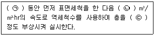
- ㉠ 24시간, ㉡ 14~48, ㉢ 25~30%
- ㉠ 24시간, ㉡ 24~28, ㉢ 10~50%
- ㉠ 10~15분, ㉡ 14~48, ㉢ 25~30%
- ㉠ 10~15분, ㉡ 24~28, ㉢ 10~50%
(정답률: 50%)
58. 침사지의 설치 목적으로 잘못된 것은?
- 펌프나 기계설비의 마모 및 파손방지
- 관의 폐쇄 방지
- 활성슬러지의 dead space 등에 사석이 쌓이는 것을 방지
- 침전지와 슬러지 소화조 내의 축적
(정답률: 64%)
59. 기계적으로 청소가 되는 바(bar)스크린의 바 두께는 5mm이고, 바 간의 거리는 20mm이다. 바를 통과하는 유속이 0.9m/sec라고 한다면 스크린을 통과하는 수두손실(m)은? (단, H = [(Vb2 - Va2)/2g][1/0.7])
- 0.0157
- 0.0212
- 0.0317
- 0.0438
(정답률: 43%)
60. 바닥면적이 1km2인 호수의 물 깊이는 5m로 측정되엇다. 한 달(30일) 사이 호수물의 인 농도가 250μg/L에서 40μg/L로 감소하고 감소한 인은 모두 침강된 것으로 추정될 때 인의 침전율(mg/m2·day)은? (단, 호수의 유입, 유출은 고려하지 않음)
- 26.6
- 35.0
- 48.0
- 52.3
(정답률: 53%)
4과목: 수질오염공정시험기준
61. 95.5% H2SO4(비중 1.83)을 사용하여 0.5N-H2SO4 250mL를 만들려면 95.5% H2SO4 몇 mL가 필요한가?
- 17
- 14
- 8.5
- 3.5
(정답률: 30%)
62. 노말핵산 추출물질의 정도관리로 맞는 것은?
- 정량한계는 0.5mg/L로 설정하였다.
- 상대표준편차가 ±35% 이내이면 만족한다.
- 정확도가 110%여서 재시험을 수행하였다.
- 정밀도가 10%여서 재시험을 수행하였다.
(정답률: 64%)
63. 투명도 측정에 관한 내용으로 틀린 것은?
- 투명도판(백색원판)의 지름인 30cm 이다.
- 투명도판에 뚫린 구멍의 지름은 5cm 이다.
- 투명도판에는 구멍이 8개 뚫려있다.
- 투명도판의 무게는 약 2kg 이다.
(정답률: 65%)
64. 노말 핵산 추출물질을 측정할대 시험과정 중 지시약으로 사용되는 것은?
- 메틸레드
- 메틸오렌지
- 메틸렌블루
- 페놀프탈레인
(정답률: 59%)
65. 배출허용기준 적합여부를 판정을 위해 자동시료채취기로 시료를 채취하는 방법의 기준은?
- 6시간 이내에 30분이상 간격으로 2회 이상 채취하여 일정량의 단일 시료로 한다.
- 6시간 이내에 1시간이상 간격으로 2회 이상 채취하여 일정량의 단일 시료로 한다.
- 8시간 이내에 1시간이상 간격으로 2회 이상 채취하여 일정량의 단일 시료로 한다.
- 8시간 이내에 2시간이상 간격으로 2회 이상 채취하여 일정량의 단일 시료로 한다.
(정답률: 68%)
66. 수중 시안을 측정하는 방법으로 가장 거리가 먼 것은?
- 자외선/가시선 분광법
- 이온전극법
- 이온크로마토그래피법
- 연속흐름법
(정답률: 41%)
67. 시료의 전처리를 위한 산부해법 중 질산-과염소산법에 관한 설명으로 옳지 않은 것은?
- 과염소산을 넣을 경우 질산이 공존하지 않으면 폭발할 위험이 있으므로 반드시 질산을 먼저 넣어 주어야 한다.
- 납을 측정할 경우 과염소산에 따른 납 증기 발생으로 측정치에 손실을 가져온다.
- 유기물을 다량 함유하고 있으면서 산분해가 어려운 시료들에 적용한다.
- 유기물을 함유한 뜨거운 용액에 과염소산을 넣어서는 안 된다.
(정답률: 47%)
68. 물 1L에 NaOH 0.8g이 용해되었을 때의 농도(몰)은?
- 0.1
- 0.2
- 0.01
- 0.02
(정답률: 65%)
69. 이온전극법에 대한 설명으로 틀린 것은?
- 시료용액의 교반은 이온전극의 응답속도는 이외의 전극범위, 정량한계값에는 영향을 미치지 않는다.
- 전극과 비교전극을 사용하여 전위를 측정하고 그 전위차로부터 정량하는 방법이다.
- 이온전극법에 사용하는 장치의 기본구성은 비교전극, 이온전극, 자석교반기, 저항 전위계, 이온측정기 등으로 되어 있다.
- 이온전극의 종류에는 유리막 전극, 고체막 전극, 격막형 전극이 있다.
(정답률: 69%)
70. 분원성 대장균군(시험관법)측정에 관한 내용으로 틀린 것은?
- 분원성 대장균군 시험은 추정시험과 확정시험으로 한다.
- 최적확수시험 결과는 분원성 대장균수는/1000mL로 표시한다.
- 확정시험에서 가스가 발생한 시료는 분원성 대장균군 양성으로 판정한다.
- 분원성 대장균군은 온혈동물의 배성물에서 발견된 그람음성·무아포성의 간균으로서 44.5℃에서 락토오스를 분해하여 가스 또는 산을 생성하는 모든 호기성 또는 통기성 혐기성균을 말한다.
(정답률: 58%)
71. 용존산소의 정량에 관한 설명으로 틀린 것은?
- 전극법은 산화성물질이 함유된 시료나 착색된 시료에 적합하다.
- 일반적으로 온도가 일정할대 용존산소 포화량은 수중의 염소이온량이 클수록 크다.
- 시료가 착색, 현탁된 경우는 시료에 칼륨명반 용액과 암모니아수를 주입한다.
- Fe(Ⅲ) 100~200mg/L가 함유되어 있는 시료의 경우 황산을 첨가하기 전에 플루오린화칼륨용액 1mL을 가한다.
(정답률: 55%)
72. 공장폐수 및 하수유량-관(pipe)내의 유량측정 장치인 벤튜리미터의 범위(최대유량 : 최소유량)로 옳은 것은?
- 2:1
- 3:1
- 4:1
- 5:1
(정답률: 60%)
73. 기체크로마토그래피를 적용한 알킬수은 정량에 관한 내용으로 틀린 것은?
- 검출기는 전자포획형 검출기를 사용하고 검출기의 온도는 140~200℃로 한다.
- 정량한계는 0.00⑤ mg/L 이다.
- 알킬수은화합물을 사염화탄소로 추출한다.
- 정밀도(% RSD)는 ±25% 이다.
(정답률: 40%)
74. 자외선/가시선을 이용한 음이온 계면활성제 측정에 관한 내용으로 ( ) 에 옳은 내용은?
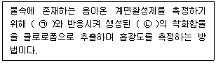
- ㉠ 메틸레드, ㉡ 적색
- ㉠ 메틸렌레드, ㉡ 적자색
- ㉠ 메틸오렌지, ㉡ 황색
- ㉠ 메틸레블루, ㉡ 청색
(정답률: 69%)
75. 식물성 플랑크톤(조류)분석 시 즉시 시험하기 어려울 경우 시료보존을 위해 사용되는 것은? (단, 침강성이 좋지 않은 남조류나 파괴되기 쉬운 와편모 조류인 경우)
- 사염화탄소용액
- 에틸알콜용액
- 메틸알콜용액
- 루골용액
(정답률: 50%)
76. 염소이온 측정방법 중 질산은 적정법의 정량한계(mg/L)는?
- 0.1
- 0.3
- 0.5
- 0.7
(정답률: 32%)
77. 수질분석을 위한 시료 채취 시 유의사항으로 옳지 않은 것은?
- 채취용기는 시료를 채우기 전에 맑은 물로 3회 이상 씻은 다음 사용한다.
- 용존가스, 환원성 물질, 휘발성 유기물질 등의 측정을 위한 시료는 운반중 공기와의 접촉이 없도록 가득 채워야 한다.
- 지하수 시료는 취수정 내에 고여 있는 물을 충분히 퍼낸(고여 있는 물의 4~5배 정도이나 pH 및 전기전도도를 연속적으로 측정하여 이 값이 평형을 이룰 때까지로 한다.) 다음 새로 나온 물을 채취한다.
- 시료채취량은 시험항목 및 시험횟수에 따라 차이가 있으나 보통 3~5L 정도이어야 한다.
(정답률: 77%)
78. 기체크로마토그래피법의 전자포획검출기에 관한 설명으로 ( ) 에 알맞은 것은?
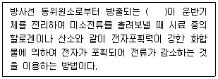
- α(알파)선
- β(베타)선
- γ(감마)선
- 중성자선
(정답률: 68%)
79. 현재 널리 사용되고 있는 유도결합 플라스마의 고주파 전원으로 알맞은 것은?
- 라디오고주파 발생기의 27.12 MHz 로 1 kW 출력
- 라디오고주파 발생기의 40.68 MHz 로 5 kW 출력
- 라디오고주파 발생기의 27.12 MHz 로 100 kW 출력
- 라디오고주파 발생기의 40.68 MHz 로 1000 kW 출력
(정답률: 39%)
80. 중금속 측정을 위한 시료 전처리 방법 중 용매추출법인 피로리딘다이티오카르바민산 암모늄 추출법에 대한 설명으로 옳지 않은 것은?
- 시료 중의 구리, 아연, 납, 카드뮴, 니켈, 코발트 및 은 등의 측정에 이용되는 방법이다.
- 철의 농도가 높을 때는 다른 금속 추출에 방해를 줄 수 있다.
- 망간은 착화합물 상태에서 매우 안정적이기 때문에 추출되기 어렵다.
- 크롬은 6가 크롬 상태로 존재할 경우에만 추출된다.
(정답률: 62%)
5과목: 수질환경관계법규
81. Ⅲ지역에 있는 공공폐수처리시설의 방류수 수질기준으로 알맞은 것은? (단, 단위 : mg/L)
- SS : 10 이하, 총질소 : 20 이하, 총인 : 0.5 이하
- SS : 10 이하, 총질소 : 30 이하, 총인 : 1 이하
- SS : 30 이하, 총질소 : 30 이하, 총인 : 2 이하
- SS : 30 이하, 총질소 : 60 이하, 총인 : 4 이하
(정답률: 56%)
82. 환경부장관은 물환경보전법의 목적을 달성하기 위하여 필요하다고 인정하는 때에는 관계기간의 협조를 요청할 수 있다. 이 각 호에 해당하는 항 중에서 대통령령이 정하는 사항에 해당되지 않는 것은?
- 도시개발제한구역의 지정
- 녹지지역, 풍치지구 및 공지지구의 지정
- 관광시설이나 산업시설 등의 설치로 훼손된 토지의 원상복구
- 수질이 악화되어 수도용수의 취수가 불가능하여 댐저류수의 방류가 필요한 경우의 방류량 조절
(정답률: 41%)
83. 제1종 사업장으로서 배출허용기준을 처음 위반한 경우 배출부과금 산정 시 부과되는 계수는? (단, 사업장 규모 : 10000 m3/day 이상인 경우)
- 2.0
- 1.8
- 1.6
- 1.4
(정답률: 70%)
84. 낚시제한구역에서의 낚시방법 제한사항에 관한 기준으로 아닌 것은?
- 1명당 4대 이상의 낚시대를 사용하는 행위
- 낚시 바늘에 끼워서 사용하지 아니하고 떡법 등을 던지는 행위
- 1개의 낚시대에 3개의 낚시바늘을 떡밥과 뭉쳐서 미끼로 던지는 행위
- 어선을 이용한 낚시행위 등 [낚시 관리 및 육성법]에 따른 낚시어선업을 영위하는 사업
(정답률: 66%)
85. 공공폐수처리시설의 유지·관리기준에 관한 내용으로 ( )에 맞는 것은?
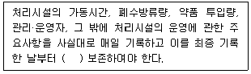
- 1년간
- 2년간
- 3년간
- 5년간
(정답률: 54%)
86. 수실 및 수생태계 환경기준 중 하천의 “사람의 건강보호 기준”으로 옳은 것은? (단, 단위는 mg/L)(오류 신고가 접수된 문제입니다. 반드시 정답과 해설을 확인하시기 바랍니다.)
- 벤젠 : 0.03 이하
- 클로로포름 : 0.08 이하
- 비소 : 검출되어서는 안 됨(검출한계 0.01)
- 음이온계면활성제 : 0.1 이하
(정답률: 40%)
87. 사업장별 환경기술인의 자격기준에 관한 내용으로 틀린 것은?
- 대기환경기술인으로 임명된 자가 수질환경 기술인의 자격을 함께 갖춘 경우에는 수질환경기술인을 겸임할 수 있다.
- 공동방지시설에 있어서 폐수배출량이 1,2종 사업장 규모인 경우에는 3종사업장에 해당하는 환경기술인을 선임할 수 있다.
- 연간 90일 미만 조업하는 1,2,3종사업장은 4,5종사업장에 해당하는 환경기술인을 선임할 수 있다.
- 특정수질유해물질이 포함된 수질오염물질을 배출하는 4,5종사업장은 3종사업장에 해당하는 환경기술인을 두어야 한다. 다만, 특정 수질유해물질이 포함된 1일 10m3이하의 폐수를 배출하는 사업장의 경우에는 그러하지 아니하다.
(정답률: 59%)
88. 시·도지사는 공공수역의 수질보전을 위하여 환경부령이 정하는 해발고도 이상에 위치한 농경지 중 환경부령이 정하는 경사도 이상의 농경지를 경작하는 자에 대하여 경작방식의 변경, 농약·비료의 사용량 저감, 휴경 등을 권고할 수 있다. 위에서 언급한 환경부령이 정하는 해발고도와 경사도 기준은?
- 400미터, 15퍼센트
- 400미터, 25퍼센트
- 600미터, 15퍼센트
- 600미터, 25퍼센트
(정답률: 73%)
89. 국립환경과학원장, 유역환경청장, 지방환경청장이 설치할 수 있는 측정망과 가장 거리가 먼 것은?
- 생물 측정망
- 공공수역 유해물질 측정망
- 도심하천 측정망
- 퇴적물 측정망
(정답률: 64%)
90. 기본배출부과금에 관한 설명으로 ( )에 알맞은 것은?
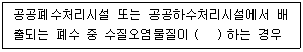
- 배출허용기준을 초과
- 배출허용기준을 미달
- 방류수수질기준을 초과
- 방류수수질기준을 미달
(정답률: 58%)
91. 환경부장관 또는 시·도지사는 수질오염피해가 우려되는 하천·호소를 선정하여 수질오염 경보를 단계별로 발령할 수 있다. 수질오염경보의 경보단계별 발령 및 해제기준이 바르지 않은 것은?
- 관심 : 2회 연속채취시 남조류 세포수 1000 세포/mL 이상 10000 세포/mL 미만인 경우
- 경계 : 2회 연속채취시 남조류 세포수 10000 세포/mL 이상 1000000 세포/mL 미만인 경우
- 조류 대발생 : 2회 연속채취시 남조류 세포수 1000000 세포/mL 이상인 경우
- 해제 : 2회 연속채취시 남조류 세포수 500 세포/mL 미만인 경우
(정답률: 67%)
92. 상수원을 오염시킬 우려가 있는 물질을 수송하는 자동차의 통행을 제한하고자 한다. 표지판을 설치해야 하는 자는?
- 경찰청장
- 환경부장관
- 대통령
- 지자체장
(정답률: 55%)
93. 폐수종말처리시설의 배수설비 설치방법 및 구조기준으로 옳지 않은 것은?
- 배수관의 관경은 100mm 이상으로 하여야 한다.
- 배수관은 우수관과 분리하여 빗물이 혼합되지 않도록 설치하여야 한다.
- 배수관이 직선인 부분에는 내경의 120배 이하의 간격으로 맨홀을 설치하여야 한다.
- 배수관 입구에는 유효간격 10mm 이하의 스크린을 설치하여야 한다.
(정답률: 54%)
94. 특정수질유해물질에 해당되지 않는 것은?
- 트리클로로메탄
- 1,1-디클로로에틸렌
- 디클로로메탄
- 메탄크로롤페놀
(정답률: 40%)
95. 수질(하천)의 생활환경기준 항목이 아닌 것은?
- 수소이온농도
- 부유물질량
- 용매 추출유분
- 총대장균군
(정답률: 49%)
96. 오염총량관리기본계획 수립 시 포함되지 않는 내용은?
- 해당 지역 개발계획의 내용
- 지방자치단체별·수계구간별 오염부하량의 할당
- 관할 지역에서 배출되는 오염부하량의 총량 및 저감계획
- 오염총량초과부과금의 산정방법과 산정기준
(정답률: 49%)
97. 폐수처리업자의 준수사항 내용으로 ( )에 알맞은 것은?
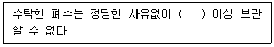
- 10일
- 15일
- 30일
- 45일
(정답률: 63%)
98. 배출시설에 대한 일일기준초과배출량 산정에 적용되는 일일율량은(측정유량×일일조업시간)이다. 일일유량을 구하기 위한 일일조업시간에 대한 설명으로 ( )에 알맞은 것은?
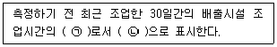
- ㉠ 평균치, ㉡ 분(min)
- ㉠ 평균치, ㉡ 시간(hr)
- ㉠ 최대치, ㉡ 분(min)
- ㉠ 최대치, ㉡ 시간(hr)
(정답률: 68%)
99. 하수도법에서 사용하는 용어에 대한 정의가 틀린 것은?
- 분뇨는 수거식 화장실에서 수거되는 액체성 또는 고체성의 오염물질이다.
- 합류식하수관로는 오수와 하수도로 유입되는 빗물·지하수가 함께 흐르도록 하기 위한 하수관로이다.
- 분뇨처리시설은 분뇨를 침전·분해 등의 방벙으로 처리하는 시설이다.
- 배수구역은 하수를 공공하수처리시설에 유입하여 처리할 수 있는 지역이다.
(정답률: 53%)
100. 오염총량관리시행계획에 포함되지 않는 것은?
- 대상 유역의 현황
- 연차별 오염부하량 삭감 목표 및 구체적 삭감 방안
- 수질과 오염원과의 관계
- 수질예측 산정자료 및 이행 모니터링 계획
(정답률: 56%)